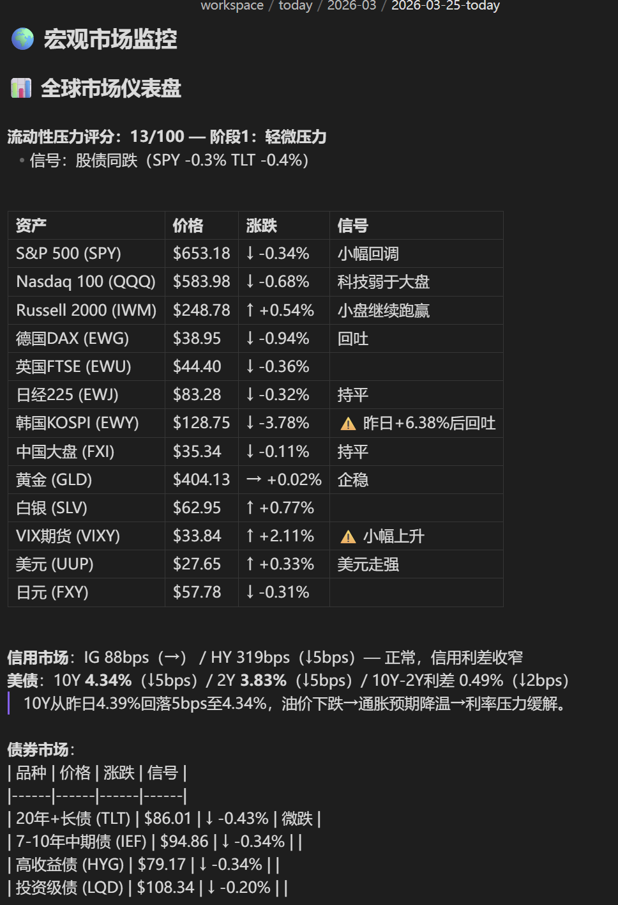

你在哪里看 Claude 写的东西？
跟着这个系列走到现在，你可能已经搭了不少东西。日报系统、假设追踪、知识库……Claude Code 帮你生成了一堆 markdown 文件。
但有个问题你可能一直在忍：
你在哪里看这些东西？
终端里滚屏看？黑底白字，表格挤成一坨，链接点不了。VS Code 里看？能渲染 markdown，但说实话，那是写代码的地方，不是读报告的地方。
我一开始也是这样。Claude 生成完日报，我就在终端里扫一眼，或者用 VS Code 打开看看。能看，但不舒服。表格渲染不好看，图表显示不了，想做个批注还得切来切去。
后来我把所有东西搬进了 Obsidian，体验完全不一样了。

为什么是 Obsidian？
不是安利你用 Obsidian。你用什么笔记软件都行，但有一个前提条件：它必须能直接读写本地文件。
Claude Code 的工作方式是读写你电脑上的文件。它生成的日报、研究笔记、假设追踪，全都是本地的 markdown 文件。
所以问题就变成了：你用什么工具来看这些 markdown 文件？
Notion？不行。Notion 的笔记存在云端，Claude Code 碰不到。你得手动复制粘贴进去。
语雀？飞书文档？同样的问题。它们都是云端存储，和你本地的文件系统是两个世界。
VS Code？能用，但它是代码编辑器，看长文本的体验不好。
Obsidian 刚好在中间——它是一个本地 markdown 编辑器。你的笔记就是一个个 .md 文件，存在你电脑的某个文件夹里。
如果你没用过 Obsidian，简单介绍一下：它是一款免费的笔记软件（个人使用完全免费），支持 Windows、Mac、Linux、手机全平台。打开速度很快，几千篇笔记也不卡。支持双向链接、图谱视图、标签系统，社区插件生态也很丰富。官网 obsidian.md 下载就行。
这意味着什么？
Claude Code 写一个文件到这个文件夹里，Obsidian 里立刻就能看到。不需要同步，不需要导入，不需要 API。因为它们打开的是同一个文件夹。
一个文件夹，两个入口。Claude 从终端进，你从 Obsidian 进。看到的是同一堆文件。
这就是全部的"技术原理"。没有什么复杂的配置。
我每天怎么用的
说几个最高频的场景。
场景一：在 Obsidian 里看 Claude 生成的日报
我每天早上会跑一个 /today 命令，Claude 会自动拉取持仓数据、扫描新闻、生成一份结构化的日报，保存成 markdown 文件。
以前我在终端里看这份日报。能看，但表格挤在一起，链接是纯文本，想回头翻上周的日报还得用命令行去找。
现在我直接在 Obsidian 里打开。表格渲染得很清楚，链接能点，标签能搜索，想看上周的日报直接在侧边栏翻。 

更方便的是，Obsidian 支持双向链接，图中的连接可快速跳转。日报里提到某家公司，我可以直接用 [[公司名]] 链接到这家公司的研究笔记。点一下就跳过去了，不用再去文件夹里翻。
场景二：剪藏网页，让 Claude 处理入库
研究的时候经常需要保存网页内容——一篇研报摘要、一条行业新闻、一个管理层的发言。
你以前怎么保存的？大概率是这样：右键另存为、或者打印成 PDF。打开一看，侧边栏、广告、导航栏、评论区全在里面，正文反而淹没在一堆垃圾信息里。想提取有用的部分？还得用pdf-to-md转化。
Obsidian 的 Web Clipper 插件做的事情完全不一样。它不是"保存网页"，而是智能提取正文——自动剔除侧边栏、导航栏、广告、评论区，只保留文章的核心内容，转成干净的 markdown 格式，一键保存到你的 vault 里。
我的流程很简单：
看到一篇有用的内容，点一下浏览器里的 Clipper 图标，直接保存到 vault 的 Clippings文件夹让 Claude Code 处理这个文件夹——提取关键信息，归类到对应的公司或行业目录下，更新知识库

就这两步。剪藏的时候我不需要想"这个该放哪"，先扔进 Clippings 就行。整理的活交给 Claude。
这比手动整理快太多了。以前我剪藏完还得自己读一遍、提炼要点、复制到对应的笔记里。现在 Claude 帮我做这些，我只需要最后扫一眼确认。
场景三：在 Obsidian 里写，让 Claude 读
反过来也一样。
有时候我在 Obsidian 里随手记了一些想法——对某个行业的判断、一个还没成型的投资假设、或者看完一份研报的笔记。
需要 Claude 帮忙的时候，我不用把这些内容复制粘贴到终端里。直接告诉它"去读一下 xxx.md 这个文件"，它就能读到我写的东西，然后帮我扩展、整理、或者挑战我的逻辑。
写完的东西也是一样——Claude 输出的研究报告、假设追踪更新，直接写进 vault 里的对应文件夹。我在 Obsidian 里刷新一下就能看到。
整个过程没有复制粘贴。
怎么搭起来
说实话，这可能是整个教程系列里最简单的一篇。因为核心就一件事：让 Obsidian 的 vault 和 Claude Code 的工作目录指向同一个地方。
方法一：在已有的 vault 里启动 Claude Code
如果你已经有一个 Obsidian vault，比如在 D:\MyNotes\：
cd D:\MyNotes
claude
就这样。Claude Code 启动后，它的工作目录就是你的 vault。你在 Obsidian 里看到的所有文件，Claude 都能读写。
方法二：在 Claude Code 的工作目录里建 vault
反过来也行。如果你已经有一个 Claude Code 的工作目录（比如跟着之前教程搭的），直接用 Obsidian 打开这个文件夹作为 vault。
打开 Obsidian → 「打开本地仓库」→ 选择你的工作目录 → 完成。
文件夹结构建议
你的目录可能长这样：
workspace/ # Claude Code 工作目录 = Obsidian vault
├── .obsidian/ # Obsidian 的配置（自动生成）
├── daily/ # Claude 生成的日报
├── hypothesis/ # 假设追踪
├── library/ # 知识库
├── Clippings/ # 网页剪藏（浏览器插件自动保存到这里）
├── research/ # 研究报告
└── CLAUDE.md # Claude Code 的配置文件
Obsidian 会自动在文件夹里创建一个 .obsidian/ 目录来存它自己的配置。这个目录不影响 Claude Code，Claude 也不会去动它。两边互不干扰。
剪藏插件设置
如果你想用浏览器剪藏功能，需要装一个 Obsidian 官方的 Web Clipper 浏览器扩展：
在浏览器扩展商店搜索 "Obsidian Web Clipper"，安装 打开扩展设置，选择你的 vault，配置默认保存路径为 Clippings文件夹以后看到想保存的网页，点一下插件图标就行
剪藏进来的内容是 markdown 格式，Claude Code 可以直接读取和处理。
从"能用"到"好用"：几个进阶技巧
1. 给 Claude 一份"vault 说明书"
这是从"能用"到"好用"最关键的一步。
在 vault 根目录放一个 CLAUDE.md 文件，把你的文件夹结构、命名规则、笔记格式写进去。Claude Code 每次启动会自动读取这个文件。
# 我的笔记库
## 文件夹结构
- daily/ — 每日日报，格式：YYYY-MM-DD.md
- hypothesis/ — 投资假设追踪
- library/ — 研究知识库，按公司/行业分子文件夹
- Clippings/ — 网页剪藏，待处理
## 规则
- 新建笔记时加 frontmatter（日期、标签、状态）
- 用 [[双向链接]] 关联相关笔记
- Clippings 里的内容处理后移到 library/ 对应目录
没有这个文件的时候，你每次都得告诉 Claude "日报放 daily 文件夹"、"研报按公司名建子目录"。有了之后，它自己就知道该怎么做。
相当于你给新来的助理写了一份工作手册。写一次，以后都不用重复交代。
2. 让 Claude 帮你整理乱掉的笔记库
用 Obsidian 时间长了，笔记库一定会乱。有些笔记没有标签，有些放错了文件夹，有些写了一半就扔在那里了。
这种事自己整理很痛苦，但对 Claude 来说就是批量处理文件。你可以让它：
扫一遍所有笔记，找出没有任何链接指向的"孤岛笔记" 检查 frontmatter 格式是否一致，缺字段的补上 把 Clippings 里积压的内容按主题归类到对应目录
我自己大概每隔一两周会让 Claude 做一次"大扫除"。比手动整理快太多了，而且它比你更有耐心——几百个文件逐个检查，它不会烦。
3. 用 Obsidian 的搜索替代命令行翻文件
想找上周 Claude 写的某份研究笔记？在 Obsidian 里 Ctrl+Shift+F 全局搜索，比在终端里 grep 快多了，而且能预览上下文。
4. 用标签管理 Claude 的输出
让 Claude 在生成文件时加上标签（比如 #日报、#假设追踪、#待处理），在 Obsidian 里就能按标签筛选和浏览。
5. 用 Graph View 看知识关联
Obsidian 有一个图谱视图，能把所有笔记之间的链接关系可视化。当你的知识库积累到一定量级，打开图谱看看哪些公司、哪些行业之间有关联，有时候会发现意想不到的线索。


不过图谱好不好看，取决于你的笔记之间有没有用 [[双向链接]] 串起来。如果每篇笔记都是孤岛，图谱就是一堆散落的点，没什么用。
手动加链接很累，但这件事特别适合让 Claude 来做。你可以让它扫一遍知识库，找出内容相关但没有互相链接的笔记，自动补上双向链接。比如你有一篇 GE Vernova 的研究笔记和一篇燃气轮机行业分析，它们明显相关但没有链接——Claude 扫到之后就会帮你加上 [[GE Vernova]] 和 [[燃气轮机]] 的互相引用。
积累一段时间之后，图谱自然就丰富起来了。
6. Obsidian CLI——让 Claude 直接操控 Obsidian
Obsidian 最近推出了命令行工具（CLI），Claude Code 可以通过终端直接在 Obsidian 里创建笔记、搜索内容、管理标签，甚至打开指定的笔记。
比如 Claude 写完一份研究报告后，可以直接让 Obsidian 打开这个文件，你不用自己去翻。这个功能比较新，感兴趣的可以去 Obsidian 官网看看文档。
回到那个比喻
Obsidian 是你的办公桌。你在上面摊开笔记、贴便签、翻资料。
Claude Code 是坐在旁边的助理。你桌上摊开什么，他都能看到。他写完的东西，直接放回你桌上。
不需要你把文件递给他，也不需要他把文件递给你。因为你们共用一张桌子。
这个系列做到现在，日报、假设追踪、知识库、业绩分析……这些系统的输出全都是 markdown 文件。Obsidian 做的事情，就是让你用一种舒服的方式去看、去写、去整理这些文件。
工具不复杂。但当你的 AI 助理和你的笔记系统打通之后，工作流会顺畅很多。
你不再需要在终端、编辑器、笔记软件之间来回切换。所有东西都在一个地方。
试试看。
免责声明：本文为个人工具使用经验分享，不构成任何投资建议。